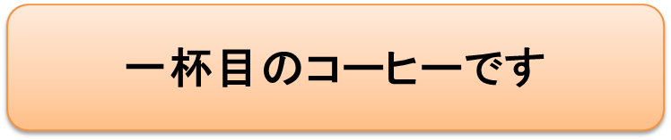
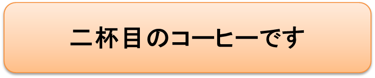
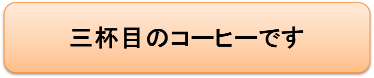

大阪府箕面市の私の自宅から歩いて僅か数分の所に水草が生い茂り沢山の樹々に囲まれた池があります。渡り鳥であるカモやサギなどが、１、２週間、羽根を休めて飛び立っていきます。
この自然美豊かな池にバンというクイナ科の鳥のカップルが数年前から住みつき、子育てに励んでいます。
大きさはハトと同じぐらいで全体は黒っぽく少し茶色がかった色のとても可愛い鳥です。
エサとなる小さな虫や草の実を探して、いつも忙しく泳ぎまわっていますが、ぽかぽかした小春日和の日など、スイー、スイー、スイーと水面に波紋を残しながら気持よさそうに泳ぎます。
しっぽを船尾のようにしっかり立てて、この池は“私達のすみ家ですよ”、と言わんばかりに悠然と泳ぎまわります。
一日に数回、何かの拍子にキョーン、キョーン、と、池面にひびきわたるほどの大きな甲高い声で鳴きます。
カモやサギが飛来しても羽根を休めているだけということが分かるのでしょうか、お客様扱いで決して縄ばり争いをすることはありません。池はいつも平和な鳥達の世界です。
ここではこの可愛いカップルの子育てぶりを紹介しましょう。現代社会を生きる私達人間にも沢山の学ぶべき点があります。
バンのカップルの子育てぶりをウォッチングしてみましょう。

子育てぶりをお話させていただくとき、お父さまバン、お母さまバンと呼びたいところですが、バンという鳥は外観からは雌雄の区別がとても難しいのです。全くのウリ二つです。このHPで、バンの夫婦を“カップル”と呼んでいる理由を了解していただければ有難いです。
バンは毎年3回ぐらい産卵し、子育てをします。4個か5個の卵をカップルが交替であたためていますが、やがて４、５羽のバンの赤ちゃんの誕生です！
最初に生れた子と最後の子では大きさの点でずい分差がありますが、子供達は争うこともなく、みんな仲良く親からエサをもらい、子供達には大きなジャングルのように見えるに違いない背の高い沢山の水草の間を、元気に泳ぎまわって遊びます。
巣は水面から20センチぐらいの場所をつくりますが、まわりの水草をうまく使って、しっかりした巣を作ります。苦労して作った巣を惜しげもなく捨てて、毎回巣を作り直しています。巣の材料となりそうな小枝、枯草などを、一生懸命、集めての作業です。
毎回巣を作り直す？ 何故そんな面倒なことを？ と思いますが、これは年に3回ぐらい、4月頃から１ヶ月くらいの間隔をおいて生れてくる子供達に巣作りを教えているからではないだろうか？ というのが、私達二人の考えた理由です。
こう考えた理由は、以下のような出来ごとがあったからです。
夏の暑い日、今シーズン最後の子育てかなと思われる頃、一番末っ子のバンが、兄さんバンや姉さんバンが巣立った後のすっかり静かになった池で親子三人での生活をしていました。
この時期、もうあらたな産卵の可能性もなく巣作りの必要性もない頃なのにカップルは巣作りをしています。その傍らで末っ子バンが一生懸命見物です！
私達二人の会話です。
| 妻： | “あれ！どうして今ごろ巣作りしているのでしょう？” |
| 私： | “うーん、分からない……例年こんな時期の巣作りは見たことがないよね” |
| 妻： | “ひょっとしたら、あれ、末っ子に巣作りの仕方を教えているのではないかしら” |
| 私： | “ちびっ子が巣作りの勉強中？……確かにそんな感じするね” |
| 妻： | “巣の作り方を末っ子にも手抜きしないで親は教えている……。全く頭が下がっちゃうなぁ……” |
勿論、私達には「動物行動学」についての深い知識はありません。
以上のような理由については100パーセントの確信はないのですが、このシーンは私達二人の目にはしっかり焼きついて残っています。

バンの子供達、生れた順に大きさが違いますが、サイズの差など全く気にしないとばかりに、子供達は小さな口をあけて仲良く親鳥にエサをねだります。やがて巣立ちの日が来るまでバン親子は、朝早くから夕方遅くまで、食事、食事、食事の連続です。バンの子育てぶりをウォッチングをしている人達は、私達のほかに、１０数名の方がいらっしゃいます。皆さんとても熱心で、毎日のように訪れて野生のバンの姿に心を癒されていらっしゃるようです。
その中に、親達の懸命のエサ集めに同情するのでしょうか。可愛い口を精一杯あけて、親にエサをねだる子供達の目の前に、食パンをちぎっては投げ込むのです。親は必死にそれを集めて口うつしに食パンを与えようとしますが、パンの投げ込まれるペースは早く、しかも広い範囲に投げ込まれます！
親がパンを拾って子供達に食べさすひまもなく子供達の拾い食いです。パンを投げ入れている夫婦の会話です。
| おばさん： | “子供達楽しんでいるわね！よかったわ” |
| おじさん： | “子供達はよっぽどお腹がへっているみたいだったね” |
彼らはバンの家族に向って
“バイバイ！！また明日パンをもってくるね！”
と優しく声をかけます。
私達二人はこういったエサを投げ与えるといったような行動は、野生動物に対しては、一切すべきではないと考えていますので、思わず
「そんなことなさらない方が良いのではないですか」
とやんわり声をかけるのですが、大抵の場合
- 無視する
- “動物愛護の精神がない人達ね”とばかりににらみ返す
- 私達の来ない時間帯にエサを与えにくる
という結果に終わります。
この人達の（善意ある？）行為はバンのカップルにとっては全くの想定外のとんでもない行為ではないだろうか、私の目にはとても忌まわしい行為に見えます。
バンのカップルは必死懸命にパンに駆けより、自分達の口からパンを与えようと必死になっているように見えます。
“エサは親から与えられるものですよ！人間からもらうものではありませんよ！”
カップルの必死の抵抗です!
このバンのカップルの必死の姿は、
“勉強やマナーは親から教わるものですよ！
塾やマナー教室で教わるものではありませんよ！”
という私達人間への警告の言葉のようにも思えてくるのです…。